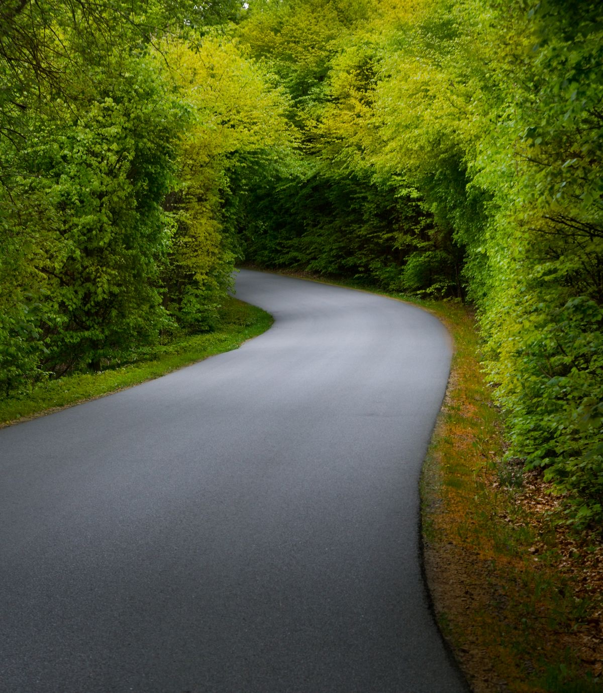
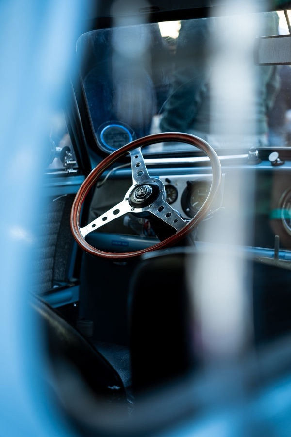
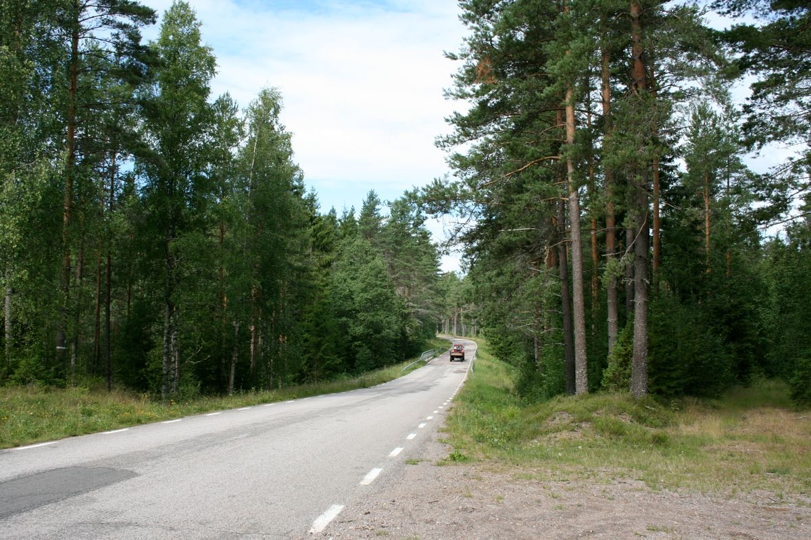

Choose what you share.
Your raw recorded driving history is private. Routes and social content follow their audience rules, with following and friendship kept distinct.
iPhone first · In development
Your roads. Your people.
Your own way.
Discover routes, build a private map of your drives, and share the car life around them.

The Gara experience
A place for the road ahead, the roads behind you, and everything you love in between.
Explore on GaraMap, find a route shared with you, or create one of your own. Follow a fixed path—or choose an open route and find your own way between its start and finish.
Your recorded journeys become a private driving atlas. Familiar roads gain a warm glow as you return, while date filters help you look back at where you’ve been.
Automatic mapping needs permission and may miss journeys. Heat is a visual summary, rather than an exact road-completion measure.
A good road, a car detail, a moment worth keeping. Share photos, thoughts, and routes through a feed built around the people and roads you care about.
Actual screens from Gara’s current development build. The account, routes, and driving history shown are test content.

Your people. Your place.
The car you keep looking back at.
The road you tell a friend about.
The small details that mean something.
Gara brings them together in a profile that feels personal—with your garage, posts, photos, routes, and saved discoveries.
Follow an interest. Build a friendship.Following is immediate. Gara friendships are accepted by both people and give friend sharing its meaning.

Go for the experience
Enjoy the road. Respect its limits.
There’s always another reason to return.
Thought through, from the start
The road comes first. Gara is being built to make exploration feel personal, deliberate, and easy to understand.
Your raw recorded driving history is private. Routes and social content follow their audience rules, with following and friendship kept distinct.
Recommendations open for you to review. You decide when to start a route. Automatic everyday mapping is a separate, optional setting.
Public-road speed and fastest-time competition are unavailable. Follow traffic laws, conditions, and closures; use the app while safely parked.
Gara is being prepared for iPhone testing. Public registration is not open and this website does not offer an App Store download yet. Contact us with questions about future access.
A fixed route has a defined path. An open route has a start and finish, with the path between them left to you. Open routes do not provide directions. Always choose legal, suitable roads and respect closures.
Your raw recorded drive history and private driving map are not shown to other drivers through ordinary profile access. Shared routes, photos, and posts can still reveal places. Read the Privacy Policy for details.
Everyday automatic mapping is optional and needs location permission. Its tracks stay on your iPhone, and some journeys may be missed. Deliberately recorded route drives are a separate feature.
People aged 18 or over who enjoy roads, cars, and sharing that interest with their circle. Driving eligibility and road-use laws still apply wherever you are.
The road ahead
We’re preparing Gara for iPhone.
Have a question, an idea, or an interest in future access?